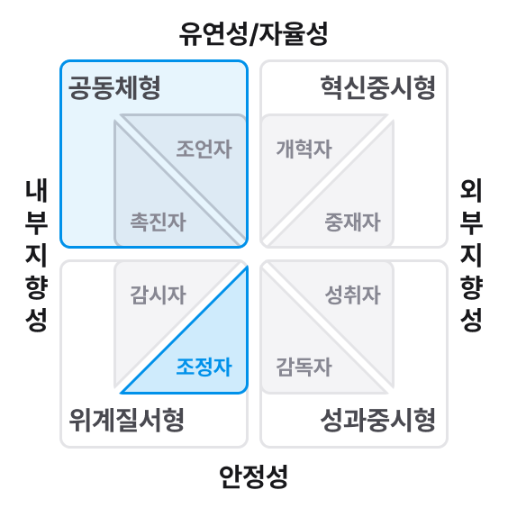

Summary 리더십 유형
나의 리더십 유형
나의 리더십 유형

특징
- 구성원들의 정서적인 측면(지지행동)과 업무 목표 달성(지시행동)에 모두 집중하는 유형입니다.
강점
- 직원을 인격적으로 존중하고, 긴밀한 유대관계 형성합니다.
- 적절한 지시, 통제, 업무권한 위임을 통해 성과를 달성합니다.
주의할 점
- 직원들의 직무 발단 단계에 따른 지시행동&지지행동의 비중 조절이 필요합니다.

나의 리더십 스타일
나의 리더십 스타일

특징
- 구체적인 계획 하에 조직을 안정적으로 운영하며, 발생가능한 갈등을 최소화합니다.
강점
- 과업 배분 및 분쟁 조정 능력이 뛰어납니다.
- 목표 설정 및 달성 과정에서의 조정능력이 뛰어납니다.
- 적절한 지시, 통제, 업무권한 위임을 통해 성과를 달성합니다.
주의할 점
- 변화에 대한 수용 및 적응이 필요합니다.
Summary 부서 조직문화 진단 결과
우리 부서 조직문화

부서 조직문화 특징과 적합한 리더십 스타일
- 공동체형 문화에서는 구성원들의 신뢰, 팀워크를 중시하며 개인의 능력개발에 대한 관심이 높습니다.
- 공동체형 문화에 적합한 리더십 스타일은 조언자/촉진자형으로 귀하의 리더십 스타일에 해당하지 않습니다.
- 담당 조직 조직문화에 부합하는 리더십 스타일 발현을 위해서는 하기의 조언자/촉진자형 역량 발현이 필요합니다.
특징
- 과업지향성 및 관계지향성을 높게 보유하는 코칭형 리더십 유형과 조직 내 업무 흐름을 원활하게 조정하는 조정자 스타일이 상호보완적으로 결합 되었습니다.
강점
- 안정적인 조직성과 달성함과 동시에 구성원들의 긍정적인 유대관계를 구축합니다.
- 조직 업무 프로세스, R&R, 조직 내 정보 흐름을 효과적으로 관리합니다.
주의할 점
- 새로운 방식의 업무에 도전하거나 이를 추진 시, 리더로서 추진력 있는 역할을 수행하기 위해 노력해야 합니다.
Summary 리더십 유형
리더십Type :
코칭형(Coaching) X 조정자(Coordinator) 스타일
나의 리더십 유형
나의 리더십 스타일
나의 리더십 Type
코칭형(Coaching) X 조정자(Coordinator) 스타일
특징
- 과업지향성 및 관계지향성을 높게 보유하는 코칭형 리더십 유형과 조직 내 업무 흐름을 원활하게 조정하는 조정자 스타일이 상호보완적으로 결합 되었습니다.
강점
- 안정적인 조직성과 달성함과 동시에 구성원들의 긍정적인 유대관계를 구축합니다.
- 조직 업무 프로세스, R&R, 조직 내 정보 흐름을 효과적으로 관리합니다.
주의할 점
- 새로운 방식의 업무에 도전하거나 이를 추진 시, 리더로서 추진력 있는 역할을 수행하기 위해 노력해야 합니다.
Summary 전사 조직문화 진단 결과
전사 조직문화
- 홍길동님이 소속된 00부의 전사 조직문화 만족도는 평균 3.5으로 전사 평균 대비 높은 수준입니다.
- 가장 높은 점수가 도출된 5가지는 고객지향, 조건적몰입, 소속감, 분위기, 협업입니다.
- 가장 낮은 점수가 도출된 3가지는 HR,보상, 인력입니다.
arrow_right
회사 평균 대비 +0.5 초과인 경우 “높은” 수준, -0.5 미만인 경우 “낮은“ 수준으로 표현하였습니다.
| 영역 | 항목 | 평균 | |||
| 전사 | 부분/사업부 | 본부 | |||
| 전사조직문화 | Total | 3.3 | 3.5 | 3.5 | |
| 3.3 | 3.5 | 3.5 | |||
| 직원경험 (Experience) |
입사경험 | 3.3 | 3.5 | 3.5 | |
| 소속감 | 3.3 | 3.5 | 3.5 | ||
| 일과 삶의 균형 | 3.3 | 3.5 | 3.5 | ||
| 소통 | 3.3 | 3.5 | 3.5 | ||
| 협업 | 3.3 | 3.5 | 3.5 | ||
| 갈등관리 | 3.3 | 3.5 | 3.5 | ||
| 다양성 존중 | 3.3 | 3.5 | 3.5 | ||
| 분위기 | 3.3 | 3.5 | 3.5 | ||
| 3.3 | 3.5 | 3.5 | |||
| 효과성 (Effectiveness) |
변화&혁신 | 3.3 | 3.5 | 3.5 | |
| 고객지향 | 3.3 | 3.5 | 3.5 | ||
| 전략 | 3.3 | 3.5 | 3.5 | ||
| 조직 | 3.3 | 3.5 | 3.5 | ||
| 프로세스 | 3.3 | 3.5 | 3.5 | ||
| 유연근무 | 3.3 | 3.5 | 3.5 | ||
| 인력 | 3.3 | 3.5 | 3.5 | ||
| HR | 3.3 | 3.5 | 3.5 | ||
| 평가 | 3.3 | 3.5 | 3.5 | ||
| 보상 | 3.3 | 3.5 | 3.5 | ||
| 3.3 | 3.5 | 3.5 | |||
| 직원몰입 (Engagement) |
직무만족 | 3.3 | 3.5 | 3.5 | |
| 조건적몰입 | 3.3 | 3.5 | 3.5 | ||
| 재직의도 | 3.3 | 3.5 | 3.5 | ||
arrow_right
익명성 보장을 위하여 전사 조직문화 결과 분석에서 사업부/센터 단위는 생략하였습니다.
나의 리더십 역량
Leading Business
총평
- 홍길동 님은 본인 Leading Business 역할에 대하여 우수한 수준이라고 평가하셨으며, 이는 타인 진단 결과 대비 유사한 수준입니다.
- 홍길동 님의 Leading Business 역할은 4.1으로 이는 회사內유사한 수준이며, 소속 조직內유사한 수준입니다.
관계별 결과 비교
그래프가 들어갑니다.
연도별/조직간 비교
| 리더역할 | 리더십 역량 | 역량 Keyword | 20년 | 21년 | 22년 | 평균 | |
| 사업부 | 전사 | ||||||
| Total | - | - | 3.5 | 3.5 | 3.5 | ||
| Leading Business | 비전제시 | 비전제시 | - | - | 3.3 | 3.5 | 3.5 |
| 비즈니스 감각 | - | - | 3.3 | 3.5 | 3.5 | ||
| 혁신적 사고 | - | - | 3.3 | 3.5 | 3.5 | ||
| 비전 실행관리 | - | - | 3.3 | 3.5 | 3.5 | ||
| 합리적 의사결정 | 합리적 의사결정 | - | - | 3.3 | 3.5 | 3.5 | |
| 고객중심 | - | - | 3.3 | 3.5 | 3.5 | ||
| 전문성 | - | - | 3.3 | 3.5 | 3.5 | ||
| 계획수립 | - | - | 3.3 | 3.5 | 3.5 | ||
| 강력한 실행력 | 강력한 실행력 | - | - | 3.3 | 3.5 | 3.5 | |
| 전략적 네트워크 | - | - | 3.3 | 3.5 | 3.5 | ||
| 위험관리 | - | - | 3.3 | 3.5 | 3.5 | ||
| 추진력 | - | - | 3.3 | 3.5 | 3.5 | ||
arrow_right
리포트 내 모든 결과값은 소수점 둘째 자리에서 반올림 처리한 값입니다. 붉은색으로 표시된 값은’21년 본인 점수가 전사 평균 대비 -0.5점 초과로 낮음을 의미하며, 해당 표시는 반올림 처리하지 않은 값을 기준으로 하였습니다.